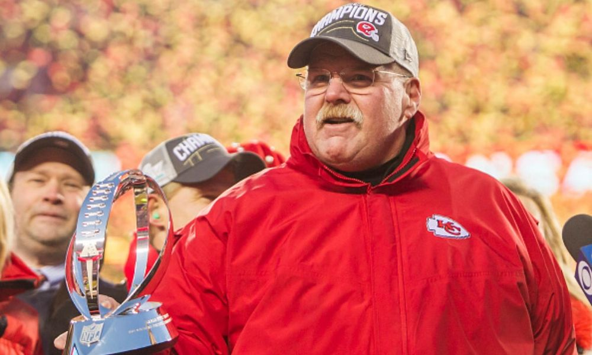

Andrew Walter Reid (born March 19, 1958) is an American football head coach of the Kansas City Chiefs of the National Football League (NFL). Reid ranks sixth in all-time NFL head coaching wins at 222. Reid was previously the head coach of the Philadelphia Eagles, a position he held from 1999 to 2012. From 2001 to 2012, he was also the Eagles' executive vice president of football operations, effectively making him the team's general manager. He led the Eagles to five National Football Conference (NFC) championship games, including four consecutive appearances from 2001–2004, and one Super Bowl appearance in 2005. He led the Chiefs to victory in Super Bowl LIV after the 2019 season, his first Super Bowl win as a head coach. Reid also won Super Bowl XXXI as the Green Bay Packers assistant offensive line and tight ends coach.
More here! 